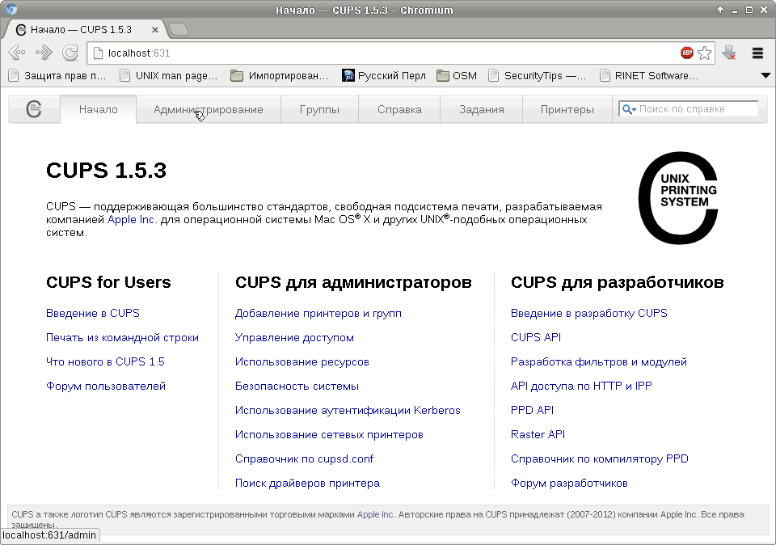

Ранее я уже писал о настройке этого принтера в Debian.
С тех пор принцип настройки остался прежним, но кое-что успело поменяться. Каждый раз приходится при настройке принтера вспоминать, как я это делал в прошлый раз. Чтобы не пришлось вспоминать, решил записать, как это делается.
Первым делом ставим необходимые пакеты:
# apt-get install cups printer-driver-hpcups printer-driver-foo2zjs
Затем скачиваем прошивку для принтера:
# getweb 1018
Теперь включаем принтер. Если принтер уже был включен, стоит его выключить и включить, чтобы в него загрузилась прошивка.
Запускаем браузер и открываем страницу по ссылке http://localhost:631/.
Далее действуем в соответствии со скриншотами (указатель мыши на скриншотах показывает, куда нужно нажать):
